A standalone Android app that lets any agent use your phone and keeps a private, day-by-day record of what you did on it. Started 27 Oct 2026. Repo: triptu/handset (private).
Needs you
2. Install Tailscale on the Fold 7 (optional, when you want Claude Code on the laptop to reach the phone) 16:52
The phone has no Tailscale app. The MCP server now listens on Tailscale and the phone itself by default, so without it your laptop can only reach the phone over adb, or through plain Wi-Fi once you turn that switch on. Installing Tailscale needs your sign-in, which I can't do over adb.
Goals
When
Your words
My reading and status
27 Oct 15:00
"extract it out, make it standalone and push as a private repo with well defined readme and all in my github repo as a new app ... decoupled with ... any other app"
No account, no outside server, own package id, own signing key, README. Running.
27 Oct 15:00
"With context collection on, It should just store recent useful context locally, and have a pretty context browser, so i can see what i did at any given day. use the local gemini nano model ... to create day summaries"
Screen text, app usage, notifications and places, kept on the phone, browsed by day, with Nano summaries. Design mocks running.
27 Oct 15:00
"add a chat option, and create MCP or sth to make all this hookable to anything ... on Claude or Chatgpt ... drive the phone or get info"
MCP server on the phone first, then a public path (Needs you 1).
27 Oct 15:00
"setting up a routine in claude to do sth if my battery is low ... or do sth when my location changes to office ... webhook routine with the app sending the notification"
Phone events POST to a webhook such as a Claude routine's fire URL; the routine calls the phone back over MCP. Planned.
27 Oct 15:00
"pretty, and useful app which is as privacy friendly as possible, make it eventually open source, and let people basically be able to have whatever agent they use operate their phone"
Everything stored only on the phone; nothing licensed in the repo. Ongoing.
27 Oct 15:20
"support for local network and tailscale"
The MCP server listens on the phone, reachable over Wi-Fi and Tailscale. Planned.
27 Oct 15:20
"api key, gemini nano, and support for gemma 4 e4B, maybe from my other app nano chat which has the setup"
Chat runs on your own API key, Gemini Nano or Gemma 4 E4B; the model code ports from nano-chat. Planned.
27 Oct 16:15
"none of them are clear minimal aesthetics that i prefer. use better-interfaces skill too"
Design round 2 runs with the Juno reference and the better-interface skill.
27 Oct 16:15
Days, Chat, Agents tabs; name Handset; own Cloudflare relay
Done (rename) or running (relay).
27 Oct 15:40
"for product design, etc., involve, fable, and Astra agents as well for product brainstorming, for design reviews for elegance and aesthetic reviews"
Both ran the brainstorm and the design review; both will review round 2 and the built screens.
27 Oct 16:55
"wouldn't routines be set up in claude or agent, why are we showing that? the third tab should be the settings close to what settings already is in the mobile use app, giving granular control over everything. with a new section showing connected agents. remove day summary and any complicated piece which will take us time to figure out and do well. the main goal here is giving the raw stuff to other agents than making this app super functional. the top area is still very busy on the home tab. let's pick B for the design direction and start"
Tabs Days and Settings (Chat when it's built); no routines, summaries, "Still open" or session lines; header is just "Today ⌄" and search; design B. UI build running.
Running
UI in design B: built on sample data, review running 17:35
Branch ui, 8 commits. Days (header "Today ⌄" and search only; month sheet; places with times; raw moments), moment pages, search, Settings with Connected agents at the top and a switch per item, and a rail on the open Fold. Google Sans Flex and Phosphor icons, all values in one theme file; the old screens are deleted. Fable is reviewing the screenshots. Next: wire it to the real store and agents once the store branch lands, then install on your phone.
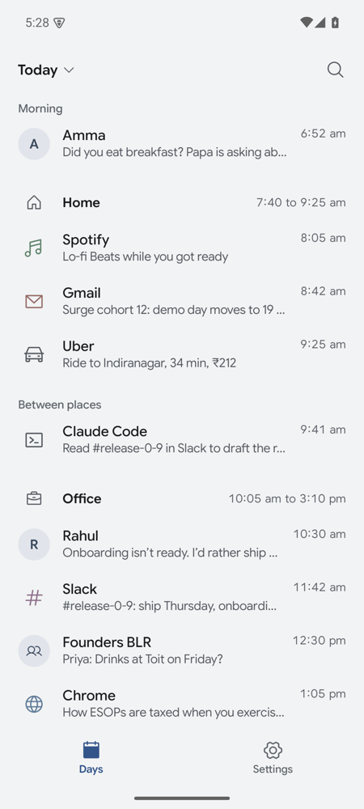
Real app, emulator, sample data: Today
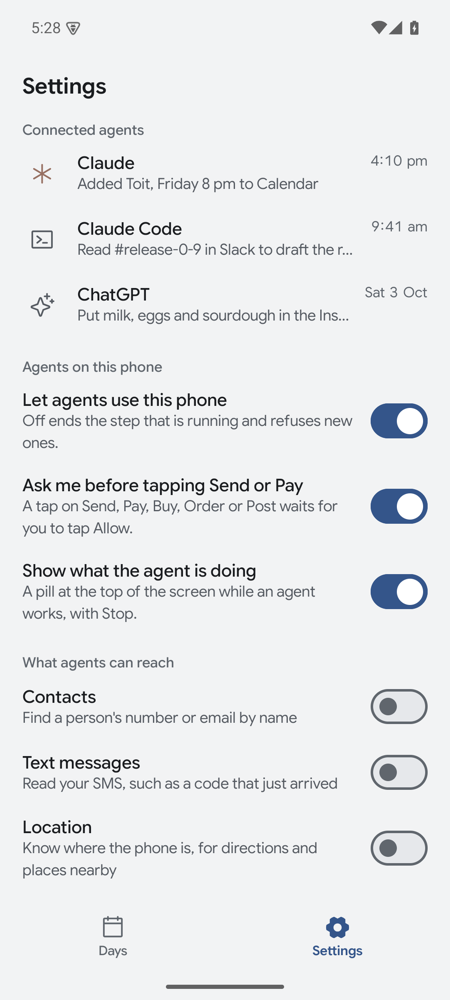
Settings
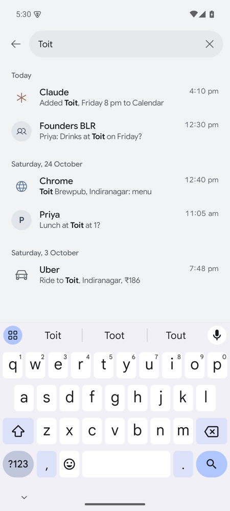
Search
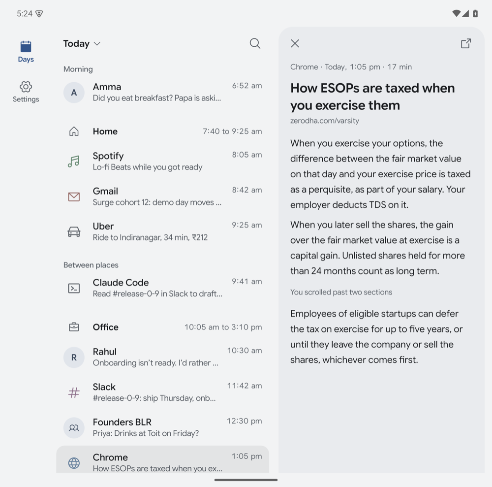
Open Fold, a moment opened
MCP server on the phone: merged 17:45
Claude Opus built it on branch mcp-server. On an emulator: Claude Code opened Clock and tapped Timer; Codex read the battery and was refused SMS ("Text messages are off for Codex. The user can turn on Text messages for this agent in Handset, under Settings, Agents, Codex."); the Inspector got a screenshot back as an image; a removed agent's token got 401; calls kept answering with the screen off in deep sleep; the server came back after a reboot. 33 unit tests pass. Astra's review found three serious issues, now being fixed by Opus on the same branch: an agent could open Handset itself and turn on its own permissions (Handset's own screens become off limits to agents); a stranger on the same Wi-Fi could tie up the server without a token (connections get capped and timed out); and the server listened on plain Wi-Fi by default (now only Tailscale and the phone itself, with Wi-Fi as a switch). Also: cancelling a call in the client now stops it on the phone, and now_playing needs the agent's Notifications permission.
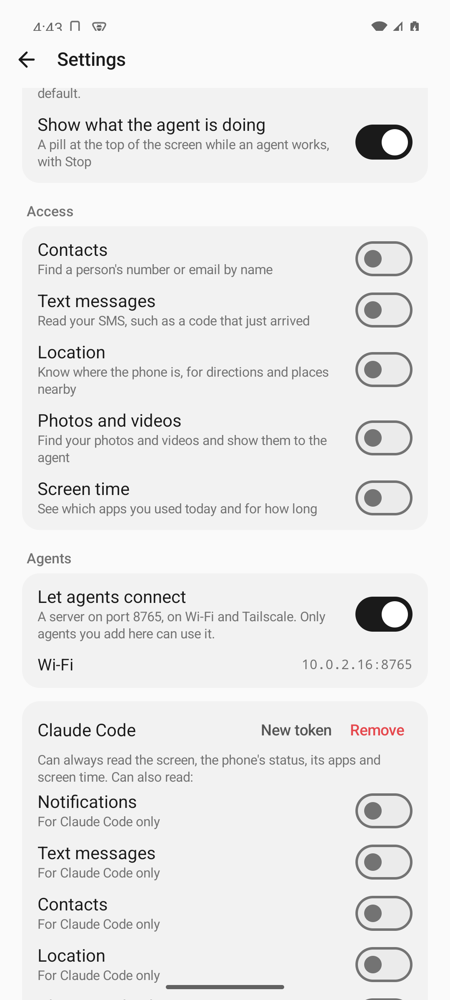
Real app, emulator: server switch, address, an agent and its switches (placeholder look until the redesign)
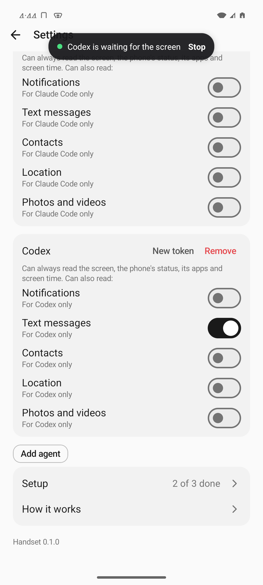
The pill names the agent: "Codex is waiting for the screen"
Plan, after the Fable and Astra brainstorm
Changed 16:55 by you: the app's job is to hand raw data and control to your agents. Cut: day summaries and titles, session lines, "Left open", routines in the app (they live in Claude). Chat comes after Days and Settings ship. Phone events that call a webhook stay planned as a small Settings item, since the routine itself lives in Claude.
Both models, working separately, put the same thing first: the phone knows what you read, so finding it again and acting on it is the daily habit. Driving apps is the engine under every use case, not a reason on its own to open the app.
The five daily uses we build for
What was that thing? Full-text search over the screens you read, with app and time, in the app and as an MCP tool search_context. "The restaurant Arjun named", "that tracking number".
Catch me up.inbox_since(time): notifications and SMS grouped by person, with the existing reply tool. "What came in during the flight?" from Claude.
Situation routines. Left home, arrived at a place, battery under a level, charging started. The phone POSTs a short payload to a URL (a Claude routine's fire URL); the routine calls back over MCP. Claude is the routine editor; the app has no automation builder.
Left open. A session that ended on a half-filled form, a typed but unsent message or a cart at checkout shows as "Left open", which you or the agent can resume.
How I actually spent today. Sessions with one Nano line each ("40 min in Chrome, mostly reading about e-bikes"), and a day summary written over those lines. Agent actions appear inline with your own.
How Nano fits in 4k tokens: one session (one app, 10 to 30 minutes of de-duplicated screen text) gives one line plus the names, places and amounts. The day summary reads the session lines. This runs when you open the app, because Nano won't run in the background.
Privacy rules
Stored on the phone, encrypted: screen text, notifications, app sessions and places as visits, plus a log of every agent action. SMS and contacts are read live and never copied.
Kept 30 days for raw text; summaries and usage totals kept a year. "Delete today" and "Pause for an hour" are one tap away (a quick settings tile).
Always excluded: password fields, the keyboard, this app, and an editable list of bank and authenticator apps.
Agents read screen, status, usage, summaries and search without asking. Notifications, SMS, contacts, location and media are switched on once per connected agent.
Send, Pay, Buy, Order, Transfer, Post, installing apps, sharing media and reading one-time codes need your tap on the phone every time, whatever the agent says.
Screen and notification text goes to agents marked as untrusted content, and it can never change what the phone allows. Webhook payloads carry fields such as the battery level, not message text.
No accounts, no analytics, no network except the agents you connect.
What we won't build: an automation builder, a user profile the app infers about you, streaks or wellbeing nudges, an assistant personality, cloud sync.
Where I disagree with both: both said to delay in-app chat. You asked for it, so it stays, but it comes after search, inbox and triggers. Astra also wanted every agent grant to carry a time range and an expiry. I left that out because it adds setup with no concrete risk behind it, since the tap-every-time list already covers the dangerous actions.
Next
Local store (Room with full-text search, encrypted) fed by screen text, notifications, usage sessions and place visits.
MCP server on the phone over Wi-Fi and Tailscale, with search_context, inbox_since and day_summary beside the existing tools.
Day browser in the chosen design, with Nano session lines and day summaries, and "Left open".
Triggers that POST to a URL: left or arrived at a place, battery level, charging.
In-app chat on your API key, Nano or Gemma 4 E4B, ported from nano-chat.
Public path for claude.ai and ChatGPT through your Cloudflare relay (running).
Decision log
When
Decision
Why
15:20
You: collect screen text, app usage, notifications and places.
15:20
You: chat on your own API key, Gemini Nano or Gemma 4 E4B.
Reuse nano-chat's model code.
15:20
Agent: Android project in android/, relay later in relay/. Package and app id ai.tushar.mobileuse, name "Mobile use". Flip it if you want another name; renaming is cheap until other people install it.
Matches nano-chat's ai.tushar.* ids.
15:20
Agent: system font instead of the old licensed fonts.
They are licensed fonts and can't go in a repo that will be public.
15:20
Agent: Gemini Nano summaries run while the app is open, not overnight.
ML Kit allows Nano only for the foreground app (error 30, BACKGROUND_USE_BLOCKED). Gemma 4 E4B runs in our own process, so it could write summaries overnight while charging. Your Fold 7 has Nano v2, which also lacks system prompts.
15:20
Agent: new signing key in ~/.config/mobile-use/, outside the repo.
Its own app id and key.
16:15
You: name Handset, tabs Days, Chat, Agents, own Cloudflare relay.
16:20
Agent: app id ai.tushar.handset; signing key moved to ~/.config/handset/ with alias handset. The GitHub repo is still mobile-use; say if you want it renamed (GitHub redirects the old URL).
Renamed before anyone else installs it.
16:20
Agent: MCP server is a small hand-written handler on a plain socket, not the Kotlin MCP SDK.
Adds 98 KB instead of 1.7 MB, and speaks the current spec (2026-07-28, which Claude Code uses) as well as the older one Codex uses. The SDK only knows the older one.
16:20
Agent: one token per agent you add, instead of one shared token.
The phone knows which agent acted (the pill and history say "Claude Code is opening WhatsApp"), and removing an agent cuts it off alone.
16:20
Agent: no extra encryption of the database.
Android already encrypts app storage and keeps it private to the app; backups are off. Extra encryption adds key handling with no concrete risk it removes, short of a rooted phone.
16:20
Agent: places are not looked up by address.
Android's address lookup sends coordinates to Google. Visits stay unnamed until you name a place once; later visits match by distance.
20:10
You: repo renamed to handset, MIT license, the ported code is fine to open-source.
Old GitHub links redirect. Still private until you say to make it public.
20:00
You: chat lives in nano-chat, which uses Handset; no chat tab in Handset.
One local chat app.
20:02
Agent: nano-chat offers the model only the small tools (search, catch up, status, open app, alarms, timer, Do not disturb), not screen driving.
Gemma runs with a 2048-token context on your Fold and Nano with about 4k; a screen dump alone can exceed that. Claude through the relay handles screen driving.
18:20
Agent: the relay is the default way to connect any agent; Tailscale is listed as the direct, more private option under Connections, and needs no extra code.
The relay works for every client including Claude Code; Tailscale keeps traffic off Cloudflare for those who want that, and helps people who won't run a relay.
17:45
Agent: all four sources are off until you turn them on; agent actions are always recorded. Places needs "Allow all the time" location.
Nothing is collected without a switch you flipped. Location every 5 minutes at balanced power, no GPS.
17:45
Agent: one-time codes are masked before they're stored.
No reason to keep them; an agent can still read a fresh one live through read_sms with that permission.
16:55
You: design B; tabs Days, Chat, Settings; no routines, summaries or other hard pieces.
Raw data for agents comes first.
16:56
Agent: no Chat tab until chat exists.
An empty tab is worse than two tabs; adding it later is one line.
17:55
Agent: the MCP server listens only on Tailscale and the phone itself by default; plain Wi-Fi is a switch.
On café Wi-Fi anyone could see the token and the agent's traffic, and tie up the server. Tailscale encrypts and limits who can reach it.
17:55
Agent: agents can't read or tap Handset's own screens.
Otherwise an agent, or a message it reads, could make it turn on its own permissions or read a token.
16:20
Agent: relay sign-in has no password. claude.ai or ChatGPT opens the relay's page, and you tap Allow on the phone.
The phone is the identity; nothing to remember or leak.
Ideas
Android AppFunctions (Android 16) so Gemini can call the app later. Claude and ChatGPT can't use them today.
Shipped
Chat through nano-chat, on your phone 21:05
nano-chat's main (local repo, no remote) now has a "Use this phone" switch per companion, connecting through Handset's one-tap screen. Gemma uses LiteRT-LM's native tool calling; Nano (no function calling in the ML Kit version the app uses) uses a JSON call format with one retry. Tools: search, catch up, day timeline, status, open app, alarm, timer, Do not disturb, what's playing; at most 3 per reply, results cut to fit the context. Astra's review led to three fixes: once a reply has read anything from your phone, it can't act for the rest of that reply (so a message can't make it turn on Do not disturb); a failed reply keeps its completed steps and Try again doesn't repeat them; turning the switch off stops a running reply and deletes the token when no companion uses it. 44 tests. Not yet tried with the real Nano and Gemma on your Fold.
Settings as pages, on your phone 20:25
A short top level like Android's own Settings: the master switch, then Agents, Recording, Connections, Phone events, Safety, Android permissions, About, each with its current state and its own page. No control dropped. The README screenshot is updated.
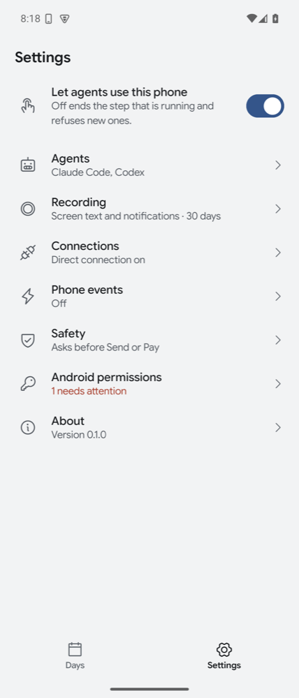
Real app, emulator: the new top level
Another app on the phone can connect with one tap 21:00
An app such as nano-chat asks Handset to connect; Handset shows "<App> wants to use this phone" with the agent switches (all off) and Allow, and returns a local address and token. Astra's review led to three fixes: a covered tap on Allow is ignored on every Android version, the token is issued only once Handset holds port 8765, and an app's token works only on the phone itself. Uninstalling the app revokes it. 136 tests. The contract is in the README so any app can use it.
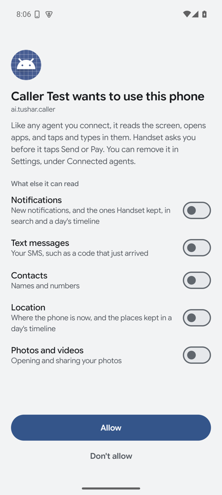
Real app, emulator, with a test app asking
README rewritten by Fable 20:45
Your words: "follow writing for readme, have fable do the readme for better wirting". README 3,706 to 2,026 words, written for a stranger on GitHub; developer material moved to docs/development.md; relay README 1,094 to 889. It corrected one wrong claim: only screen text and notifications are kept 7, 30 or 90 days; everything else a year. The Settings screenshot gets retaken after Settings pages lands.
claude.ai connected to your phone 20:00
You added the Handset connector in claude.ai through your relay and approved it on the phone. Your words: "i've connected claude.ai seems to work well".
Name a place; agent steps matched by id 19:31
Tap a place heading in Days to name it (Home, Office, Gym in one tap), rename or forget it; arrival and departure events use the name. An agent's own steps are now matched by its id, so two agents with one name can't see each other's steps. 123 tests; on your phone, the database upgraded to version 5 and the relay reconnected.
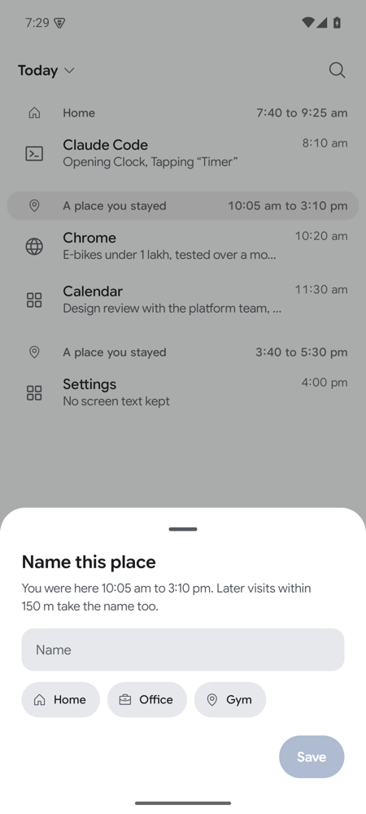
Real app, emulator: naming a place
Phone events, merged and on your phone 19:10
Branch phone-events, 112 tests. On an emulator, with battery and charger changes driven over adb, a local server received in order: test, charging_stopped, battery_low at 15% (none again at 12%), charging_started, charging_stopped, battery_low at 10% (a new discharge), charging_started. A 503 was retried once with the same payload. Arriving at or leaving a place, and the notification event, aren't run on a device yet. Astra's review found a leak (the "from" picker offered notification titles as people; now only chat senders or the app name) and delivery gaps; fixed: every event has an event_id so a routine can skip repeats, stranded events resume on restart, the 20-an-hour cap counts real sends. 117 tests.
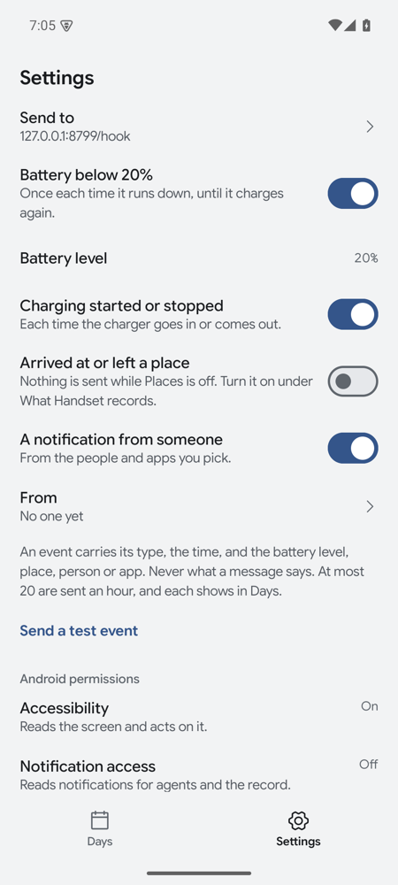
Real app, emulator: the Phone events section
New UI, local store, MCP and relay together, on main and on your phone 18:20
Branch ui: store, MCP server, relay and the new UI together, on real data. 90 tests. It also closed a gap: search and timeline returned notification text to agents whose Notifications switch was off. Claude Code on an emulator: "4 matches for “Bengaluru” … Chrome · screen: Bengaluru - Wikipedia", and after turning that agent's Notifications on: "notification from Asha: Lunch at Toit on 100 Feet Road at 1:30?". Installed on your Fold 7 and connected to the relay (Handset/Relay: connected). Astra's review found four privacy leaks, being fixed now by Opus: the day timeline gave place history to agents without Location; one agent's recorded steps could show message text to another agent; time spent paused or with app usage off got recorded later; Delete today could bring messages back. Also: codes in notification titles weren't masked, and some sample-only fields remain. All six fixed by Opus with tests (100 pass): each agent sees places only with its Location switch; other agents' steps show only the tool and whether it worked; paused and switched-off time is never collected later; Delete today stays deleted (database upgrade 1 to 2, which ran cleanly on your phone); codes masked in titles too; sample-only fields removed.
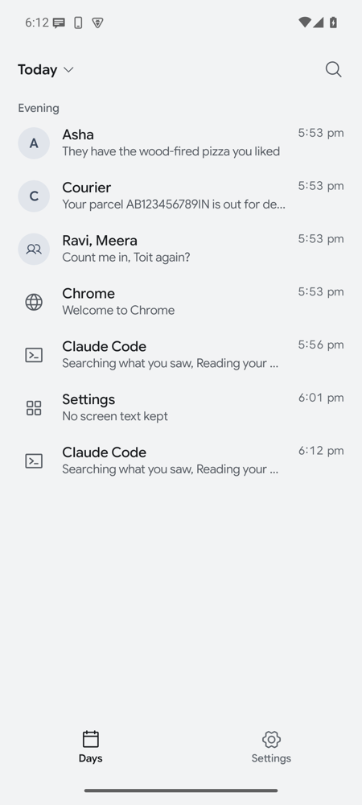
Days with real data (emulator)
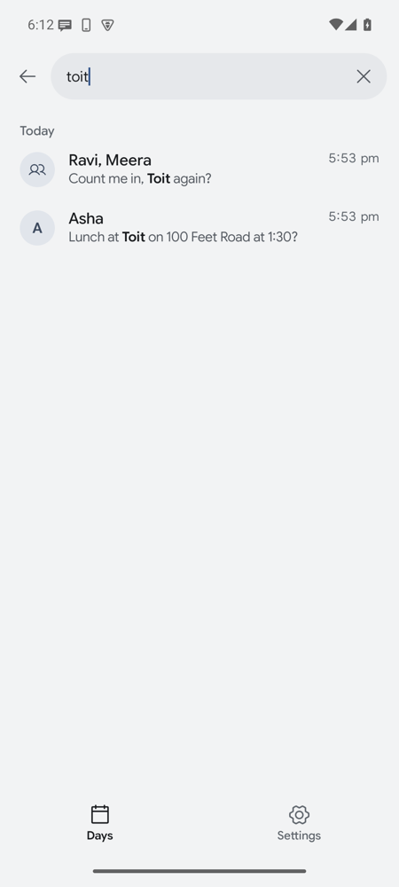
Search
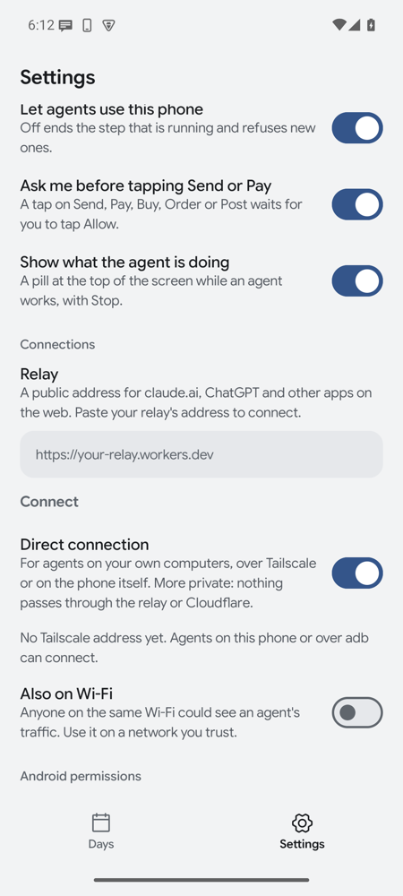
Settings: rules and connections, relay first
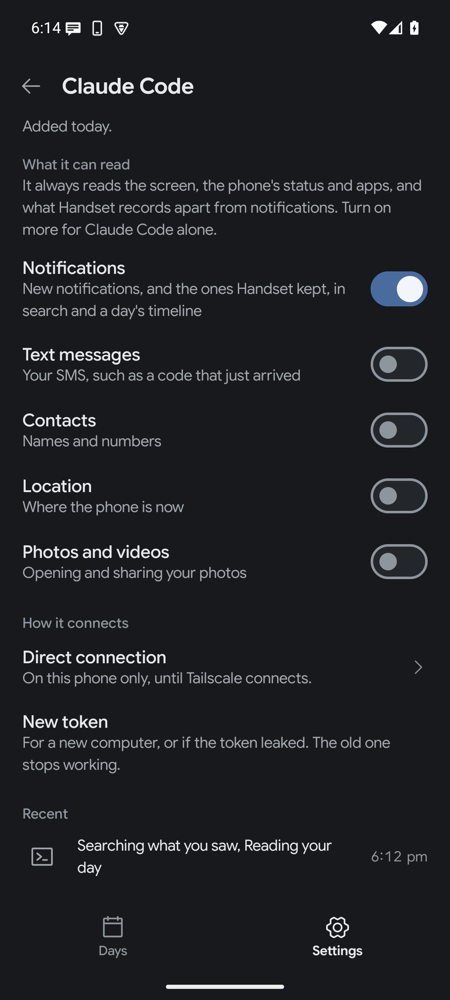
An agent's page, dark
Phone side of the relay, merged 18:50
GPT-6.1 Sol built it; Fable reviewed it (security core clean) and found two bugs, both fixed: New token crashed on a claude.ai agent, and the notification's Stop wiped every relay connection. Also fixed: one approval prompt at a time, 90 seconds; agents show "via claude.ai"; the code to compare comes first; a busy phone answers at once. 58 tests. On an emulator through the public relay: approved sign-in, device_status answered, Stop kept the connection, a second approval while one was pending was refused, a removed agent got 403. Settings rows for it come with the integration.
Claude Code drove your Fold 7 over MCP 18:05
On your phone: Settings, turn on "Let agents connect", Add agent "Claude Code", then on the Mac adb forward tcp:8765 tcp:8765 and claude mcp add --transport http -s local handset http://127.0.0.1:8765/mcp with the token. claude mcp list: "handset: ✔ Connected". Asked to check status, open Clock and go home, it answered: "battery is at 52% and the phone is on Wi-Fi … the app opened on the Alarm tab. It lists 8 alarms, and every one is switched off … I pressed home and the phone is back on the home screen." The config is in local scope of a scratch folder only.
Cloudflare relay, merged 17:05
relay/, by GPT-6.1 Sol, reviewed by Fable, fixed and redeployed. Live at a helloworld2907.workers.dev URL with a fake phone for testing; the real phone side is the next Android task. Fixes after review: the phone's Allow prompt leads with which site is asking, a stranger can't keep your phone offline, sign-in endpoints are rate-limited, an answer survives the phone switching networks mid-call, nothing is logged, cancelled calls free their slot, and a sign-in you abandon leaves no agent behind. 13 tests pass; through the public URL the MCP Inspector completed sign-in and called the test tool.
Runs on your Fold 7 16:52
The current main build is installed on your phone (Android 17) with its accessibility service on. Through the adb path: device_status ("Battery: 58%, Wi-Fi, Do not disturb off, next alarm 20:20"), get_screen on One UI Home (24 elements, the widget and dock read correctly), then a batch that opened Clock ("[ok] Opened Clock · elements changed · 815 ms") and pressed Home (347 ms). Handset is asking for notification permission on the phone; tap Allow, because the Send and Pay prompt needs it.
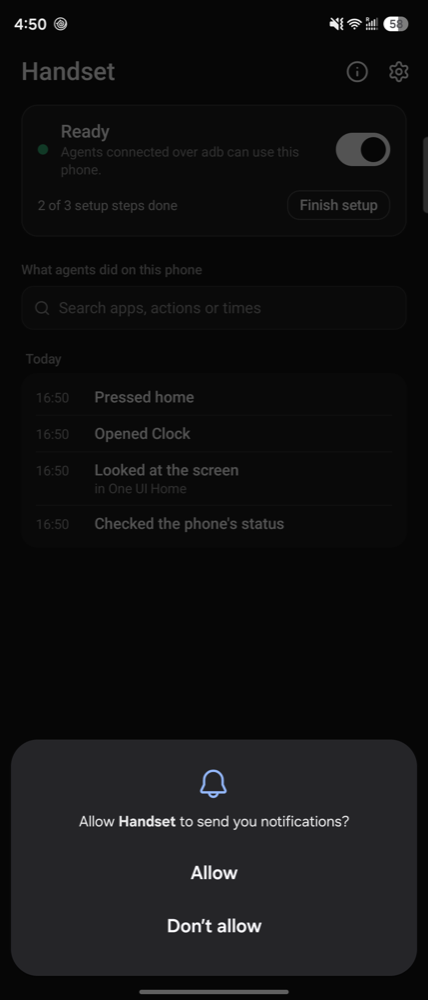
Real phone, cover screen, placeholder look until the redesign
Standalone app, renamed Handset 16:20
The module is ported into android/ with no sign-in, outside server, licensed fonts or old branding. Every call now goes through one tool runner that any transport can use. New signing key. The release build and 21 unit tests pass. On an emulator, through the adb path: get_screen, open_app Clock ("[ok] Opened Clock · elements changed · 1348 ms"), tap "Timer", device_status ("Battery: 100%, charging"), and a batch where the status call ran beside the screen calls. Commits cadaefc to 0d83ad0, rename e1fd4f1. Not yet tried on your phone.
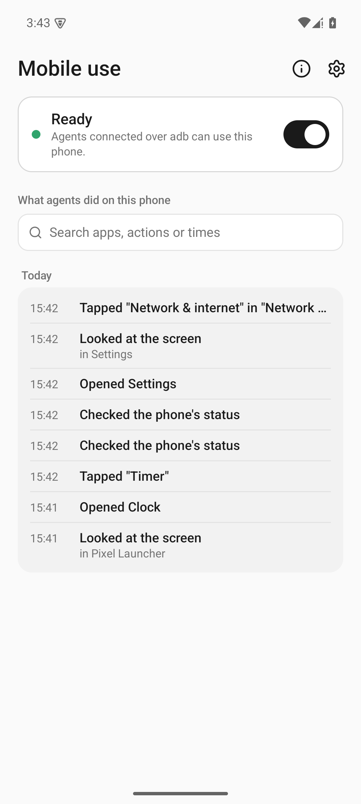
Real app on an emulator, before the rename and redesign: plain placeholder look.
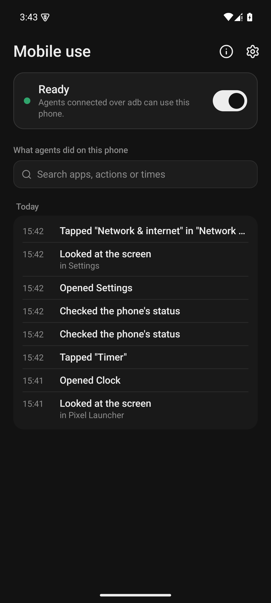
Same, dark mode.
MCP spike 16:10
An MCP server inside an Android app answered Claude Code ("The phone's battery is at 100% and it's charging"), Codex and the MCP Inspector, returned a screenshot as an image that Claude described correctly, and kept answering with the screen off in deep Doze while running as a foreground service.